Ten Plug-ins · 187 Presets · Windows and macOS
AMB Analog
Ten analog machines that behave like the desk you wish you owned.
AMB Analog is ten analog processors for the work that fills your day: preamps that push, equalisers that flatter, compressors that hold a vocal still, and tape and plate that put a record in a room. Every control does something, and nothing on the panel is decoration.
$39 once · one key unlocks all ten · two computers per licence · VST3 and standalone

Ten Separate Plug-ins, Not One Plug-in With Ten Skins
AMB Analog, the Amanorsac Mixing Bundle, is ten complete processors. Each one has its own engine, its own faceplate and its own factory presets. The panels are drawn to the proportions of real hardware, the type is set to be read from across a room, and the 187 presets are sorted by source so the first five minutes with any of them are productive instead of exploratory.
Every engine was written for the job it does, with real shelving and bell filters, real Butterworth slopes and real oversampling with the latency reported to your DAW. Where a control exists on the panel, it is wired to the sound.
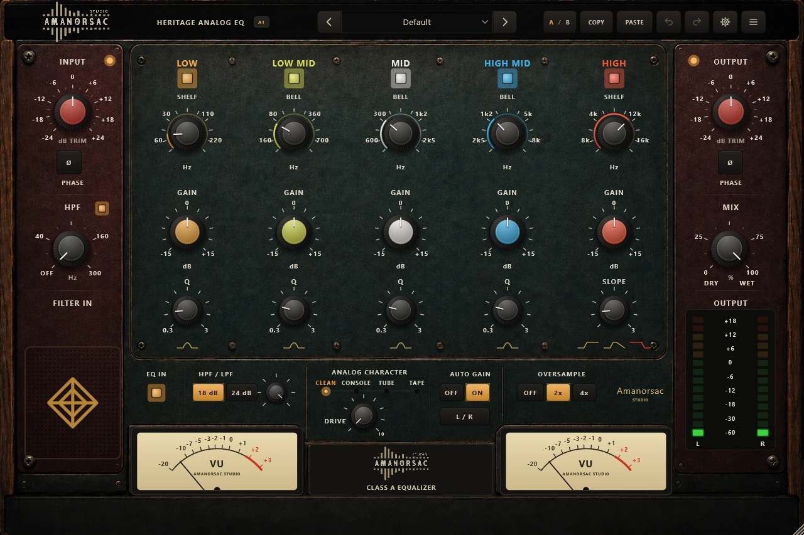
Every One of Them, and What It Is For
Ten machines, each with its own sound and its own bank of presets. Nothing in the bundle is a re-skin of anything else in it.
Heritage EQ
Class A Musical Equaliser
Five bands that flatter before they correct, built for the moves you make on every song: lift the air, take out the box and put the weight back. It has true shelves at each end, three bells between, sweepable high and low pass filters, and four characters from clean to tape with 2x or 4x oversampling when you drive it.
21 presets
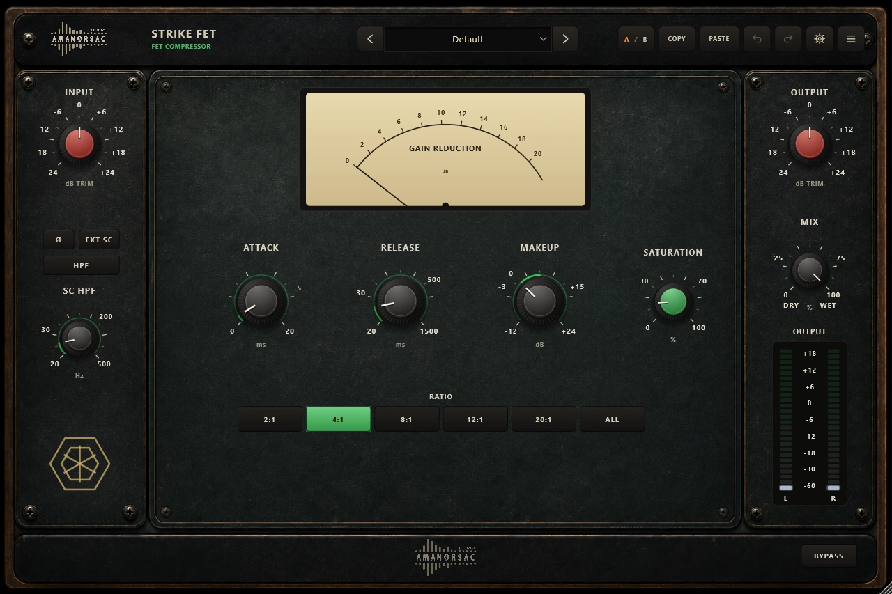
Strike FET
FET Compressor
The compressor for attitude. Microsecond attack, six ratios from 2:1 to 20:1 plus the all buttons setting, and saturation on the way out. A sidechain high pass and an external key input help when the low end is driving the detector.
18 presets
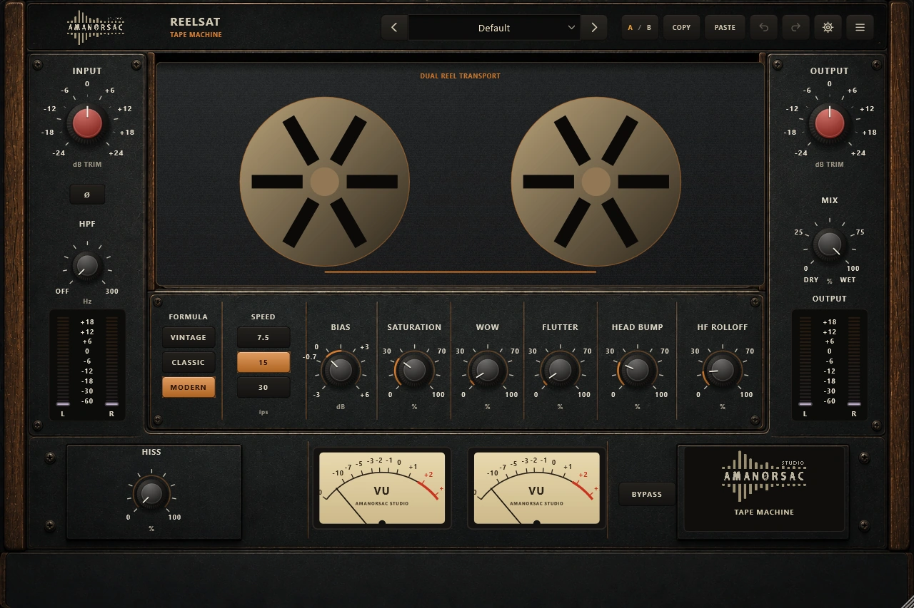
ReelSat
Tape Machine
Three tape formulas at 7.5, 15 or 30 ips, with the controls that matter: the formula, the speed and how hard you hit it. Head bump adds the weight, HF roll-off shapes the top, and wow, flutter and optional hiss add movement and room.
19 presets
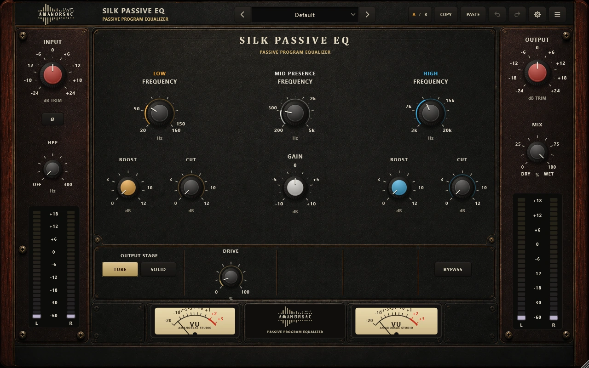
Silk Passive EQ
Passive Program Equaliser
Boost and cut are separate networks sharing one frequency selector, so boosting and cutting the same band does not cancel out. It carves the curve everyone loves. Choose a tube or solid state output stage and drive the input.
18 presets
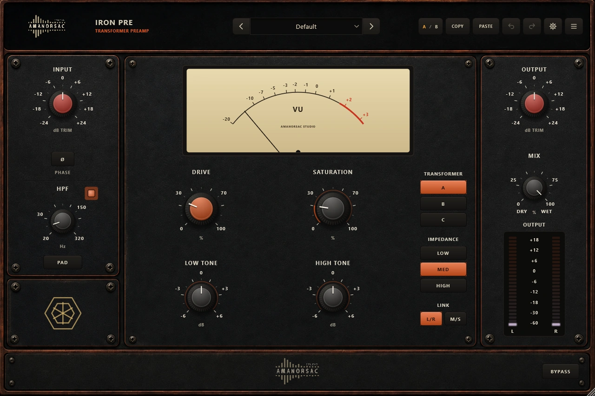
Iron Pre
Transformer Preamp
The front end of a good desk. Choose from three transformers and three input impedances, then set saturation anywhere from a whisper of iron to a broken radio. Pad, polarity, high pass and a tone pair cover the corrections you make while tracking.
19 presets
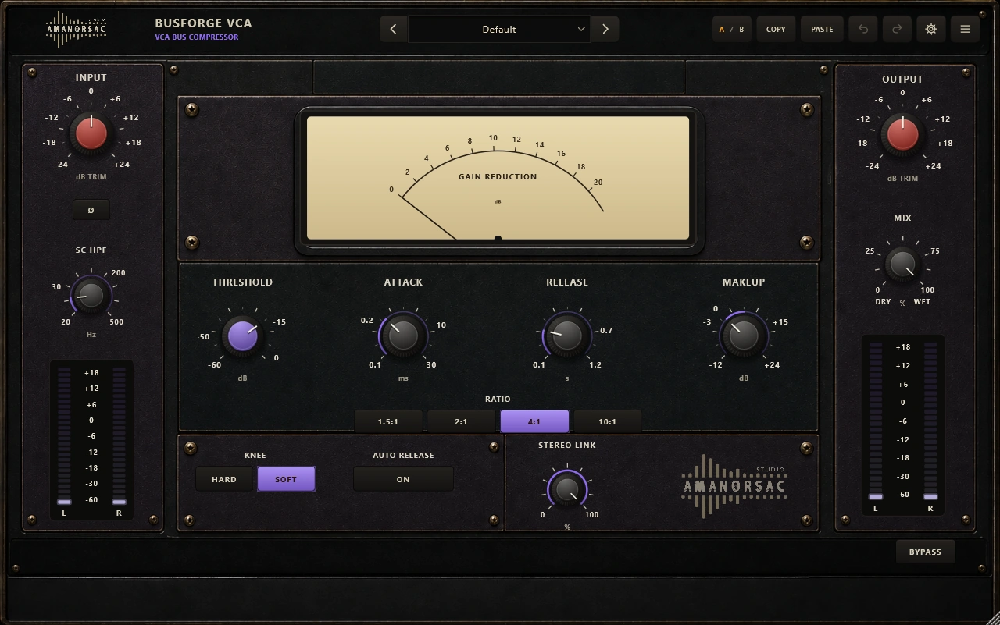
BusForge VCA
VCA Bus Compressor
Glue, in the amount you ask for. Four ratios, a soft or hard knee, auto release for full mixes, and a sidechain high pass so the kick stops pulling the whole mix down. Two decibels of this across a mix is usually the whole job.
18 presets
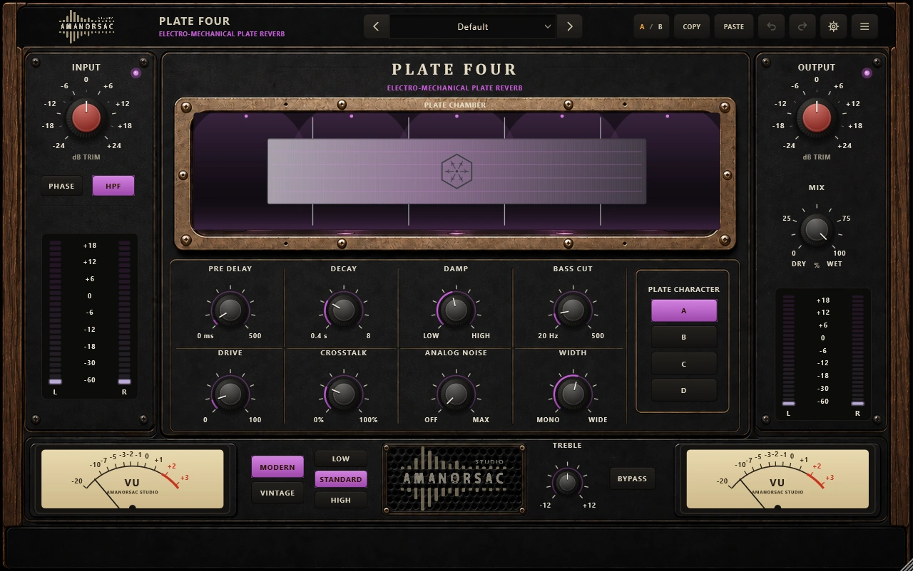
Plate Four
Electro-Mechanical Plate Reverb
Four plate characters, a tension setting you can hear change how long and how bright the plate rings, and a modern or vintage transducer era. Pre-delay reaches 500 ms and decay 8 seconds, with bass cut and treble shelf to shape the tail.
19 presets
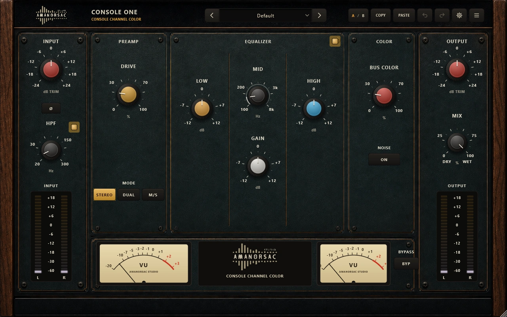
Console One
Console Channel Colour
Preamp, three band EQ, high pass and bus colour, in the order a console puts them. Push the drive for the harmonic signature, use the EQ for the shape, and add as much of the bus stage as the mix wants, with optional analog noise.
18 presets
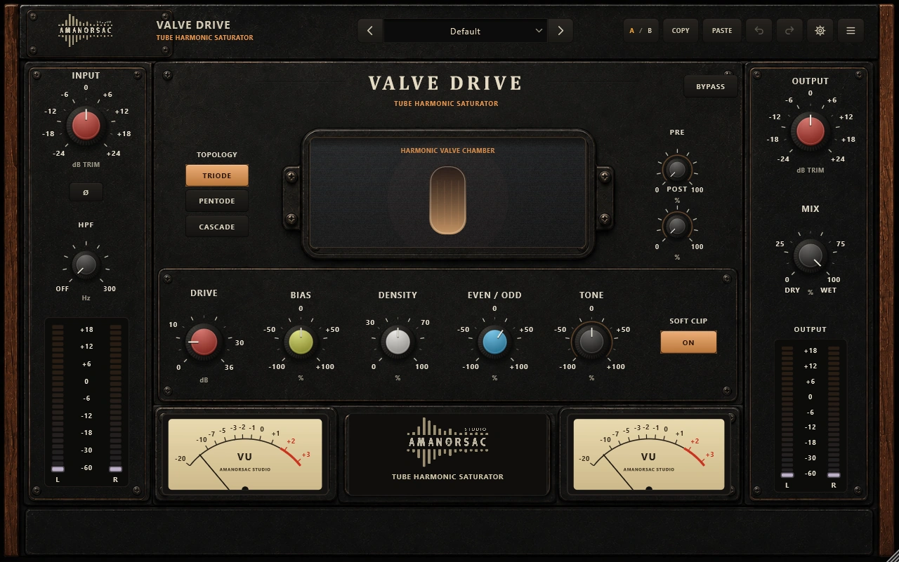
Valve Drive
Tube Harmonic Saturator
Choose triode, pentode or cascade, then choose the harmonics. A balance control sets how far off centre the stage runs, which decides whether you hear even or odd harmonics, and pre and post emphasis put the drive where you want it.
19 presets
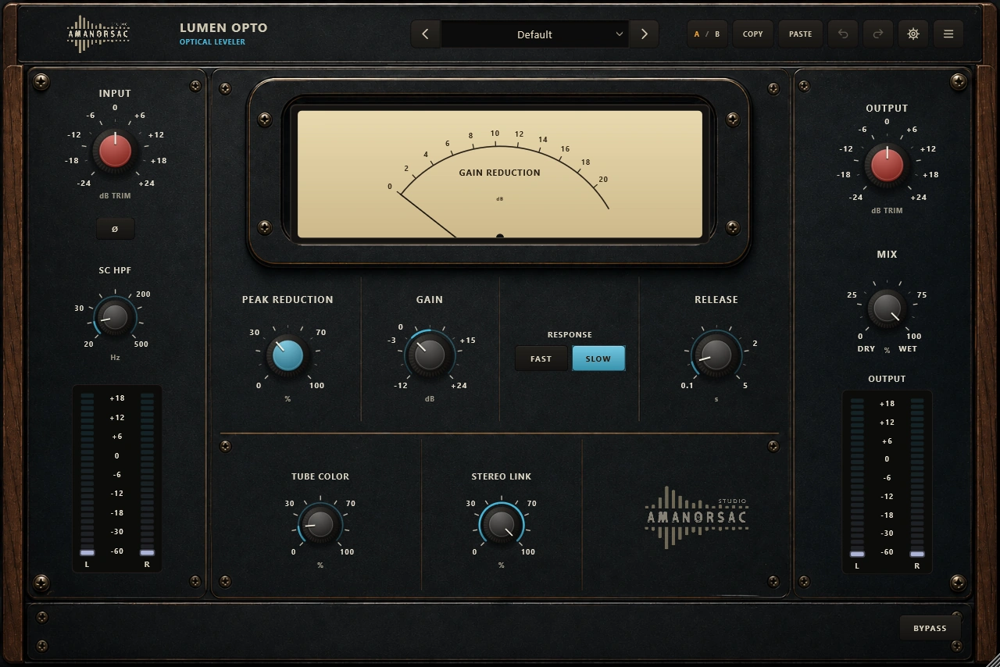
Lumen Opto
Optical Leveller
The one you leave on the vocal. Its program dependent release makes a vocal sit still without sounding held. Fast and slow response, an adjustable release, a tube colour stage and stereo link for buses.
18 presets
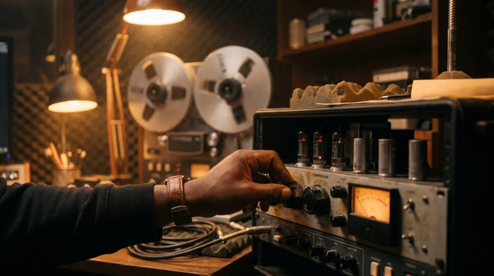
From the Studio
Made by Someone Who Mixes Every Week
AMB Analog came out of the Amanorsac Studio mix room, where the same handful of moves get made on every church recording and every client song. These are the processors that do those moves, with the controls placed where your hand expects them.
Presets
187 Presets, Filed by What You Are Working On
Open the drawer for the source in front of you instead of scrolling a long list. There are drawers for vocals, drums, bass, guitars, keys, strings and horns, the mix bus, the master, creative effects and utility. Every preset also carries tags for source, intent, genre, intensity and character.
Your own presets save next to the factory ones as plain XML files that you can copy between computers or send to someone else.
Measured Before It Ships
An automated audit runs all ten plug-ins at 44.1, 48, 96 and 192 kHz, at buffer sizes from 16 to 2048 samples, with every control at its extremes. It proves that every parameter changes the sound, the output stays clean and bounded, silence in gives silence out, bypass returns exactly what went in, and every factory preset loads and does something.
That last check matters more than it sounds. A bank of presets that load but do nothing is the most common problem in a bundle this size, and it is the kind of thing only a machine will check three hundred times without getting bored.
Tech Specs
Formats
VST3 and standalone. AAX is not part of this release.
Platforms
Windows 10 and 11, 64 bit. macOS.
Sample Rates
44.1 kHz to 192 kHz.
Channels
Mono and stereo. Sidechain input on Strike FET.
Interface
Resizable from 1024 to 1920 pixels wide, fixed aspect.
Presets
187 factory presets across the bundle, grouped by source.
Preset Files
.amanorsacpreset, plain XML, portable between machines. Saved in %APPDATA%\Amanorsac Studio\Presets\ under each product's name.
In Every Plug-in
A/B snapshots, copy and paste between instances, full undo and redo, typed values on any knob, host bypass, automation and session recall.
Licence
One key unlocks the whole bundle. Two computers per licence, thirty days offline between check-ins.
Questions
Is this one plug-in with ten presets?
How does one key unlock ten?
Does it need the internet?
Where do my presets go?
Windows or Mac?
AMB Analog
$39
Ten plug-ins and 187 presets for one price, with a licence you move yourself when you change computers. A year of updates is included, and the version you have keeps working after that.
How to Pay
In Ghana, pay with MTN MoMo. Everywhere else, pay by card.
Ghana · MTN MoMo
Pay at the studio's MoMo link, then send the screenshot.
- Open the link or scan the code. The request is to Stephen Amanor Sackey, 024 685 8947.
- Send the price of AMB Analog. Not sure of the cedi amount? Ask on WhatsApp first.
- Send the screenshot to 024 685 8947 on WhatsApp with the app's name and the email of your account here. Your code comes back the same day and unlocks it in My Apps.

Everywhere Else · Card
Pay by card, or ask us anything first.
Use the Buy button above. It takes Visa, Mastercard and Apple Pay in US dollars, and AMB Analog is in My Apps the moment it clears.
Questions before you buy? Scan the code and message the studio on WhatsApp.
Message on WhatsApp